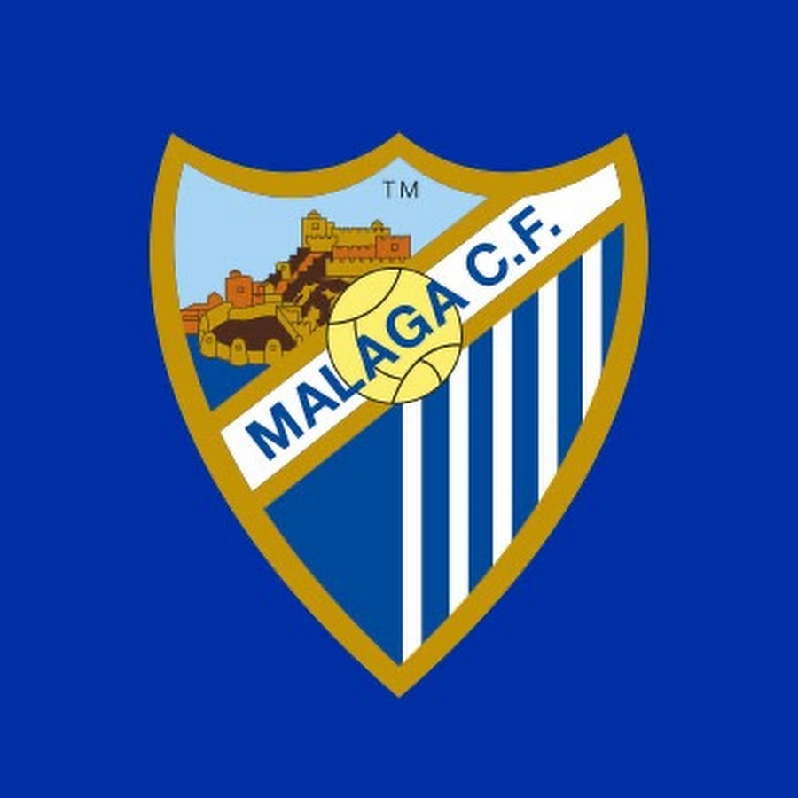
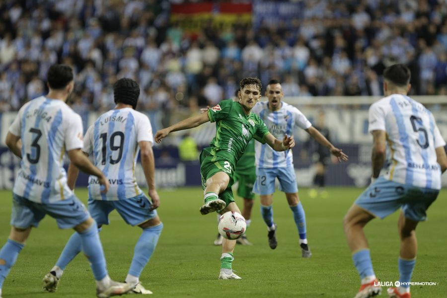

Una noche mágica en La Rosaleda.

El Málaga no sólo supo frenar al líder de la categoría, los dos equipos que sólo han sufrido una derrota liguera tras 16 jornadas, sino que incluso estuvo más cerca de la victoria, especialmente en una gran primera parte, ante un Racing de Santander que no pudo mantener su pleno de victorias a domicilio, aunque sigue sin perder lejos de El Sardinero, tras un gran partido con claro protagonismo para los dos porteros. Los de Sergio Pellicer, además, encadenan la sexta jornada seguida sin encajar un gol para un total de 589 minutos sin que Alfonso Herrero recoja el balón de su portería; mientras los de José Alberto se quedan sin marcar por primera vez esta temporada.